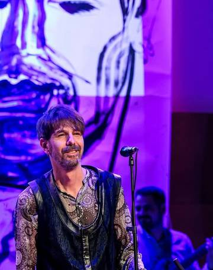
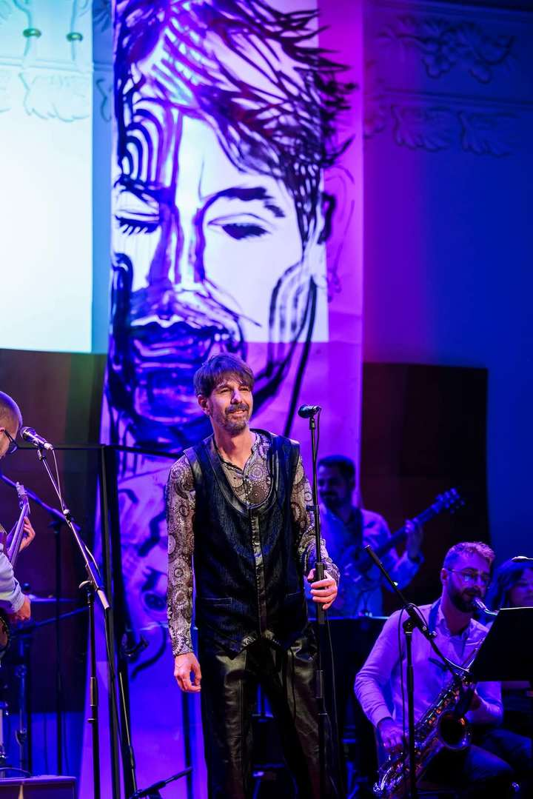
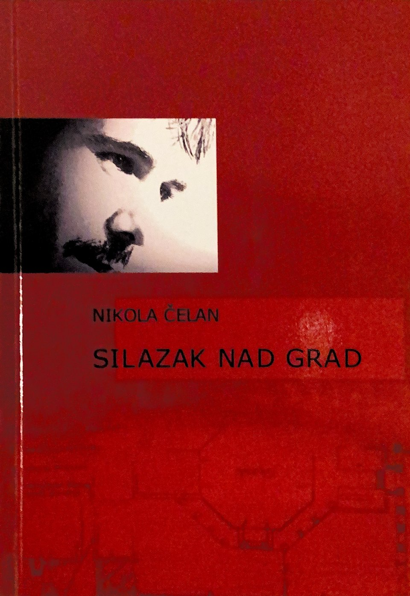
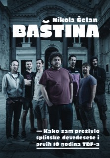

Nikola Čelan
TBF 1990–94 · Puntari 2000 · Iskon until 2006 · Libar
Journalist (Rolling Stone Hrvatska, Heroina Nova, Livingstone magazin), writer and musician from Split. Early TBF lineup; original lineup of klapa Iskon (until 2006); founder of the Libar project. Author of the books Silazak nad grad and Baština, the play Baš beton, and recordings with Libar and Antun Devčić.

Short biography
Since the early 1990s he has been part of the Split music scene, first in the school, pre-release lineup of TBF, then in the band Rectum, klapa Puntari (2000), klapa Iskon (2000–2006) and the Libar project. He has written for daily and weekly papers and radio stations, and edited the fanzine Reful and the theatre monthly Start. In 1999 his play Baš beton premiered at the Split Summer Festival. With Puntari he won the Silver Shield at FDK Omiš in 2000. In the original Iskon lineup he sings bass: Ti si more, Nevera, the album Ljubavne (2005); he left the klapa in 2006, before its later, newly composed recording phase. He published Silazak nad grad in 2006 and Baština in 2017.
Phases
TBF — early lineup (c. 1990–1994)
School lineup with Mladen Badovinac and Luka Barbić. First public performance: 19 December 1992, opening for Dino Dvornik at Kakadu. Čelan left in 1994. Later work with TBF: Baš beton in 1999; guest appearances in 2017 and 2019. He is not part of the recording lineup from Ping-pong (1997) onward.
- Sound the Bell
- Fading Blue Glory
- That’s the Way We Like It
- Raplika (original)
Rectum (from 1994)
Crossover / guitar band. Recordings exist; they are not on Discogs.
Recorded in 1996 for the never-released album Analy; first commercially released in 2026 on the compilation Evo ruke, Splite – Vol. 1 (editor Stivi Vučković, Spona / Wolfman).
Evo ruke, Splite – Vol. 1 (2026)
Three recordings from the 1990s on which Čelan is a (co)author and/or performer:
- Rectum feat. TBF — (P)osveta pizdunima
- Rectum — Reconstructed
- Esben Pepeljug — Veliki brat
Klapa Puntari (2000)
Silver Shield, FDK Omiš 2000. Membership amounts to that festival year.
Klapa Iskon (2000–2006)
Bass in the original lineup. Ti si more, Nevera, the album Ljubavne (2005). Left in 2006. Later broadcasts are not a return to the klapa.
Libar (2007–)
- Klapa Libar — Prvi (2008); Indexi 2009.
- The group Libar — Dite; the album Libar (2012).
- Duo (from 2022) — Čelan and Antun Devčić; Kliješta (Greenwood, 2022); the EP Nova Zemlja (2025).
Solo
Singer-songwriter singles: first Tvoj zakon (2018), second Goli ispred Boga (2020, on the vinyl compilation Kus njega), third Spaljene rane (2021, Greenwood Studio).

Discography
| Period | Project | Role | Release |
|---|---|---|---|
| 1990–94 | TBF, early lineup | founding, vocal | demo, radio, Kakadu 1992 |
| 1990s / 2026 | Rectum / Esben Pepeljug | vocal | Evo ruke, Splite – Vol. 1 |
| 2000 | Klapa Puntari | vocal | Silver Shield, FDK Omiš |
| 2000–2006 | Klapa Iskon | bass, original lineup | Ljubavne, Ti si more, Nevera |
| 2007–2017 | Libar | founder, vocal | Prvi, Libar, Dite |
| 2018– | Solo | songwriter, vocal | Tvoj zakon, Goli ispred Boga, Spaljene rane |
| 2022– | Libar, duo (with Antun Devčić) | author, vocal | Kliješta, Nova Zemlja |
Iskon: Baren se iskaji nevirna, Bila golubice, Cesarica (live), Izišla je zelena naranča, Izresla ruža rumena, Lipa li si mare moja, Ne budi me mati (live), Niti san ja seljanka, Ostavljam te samu, Proplakat će me zora, Serenada Marići, Slatko spavaj, Zem'ja; with Luky Ti si more, Nevera, Ča život bija bi bez nje, Škojarska pisma; TBF & Iskon — Splitsko stanje uma; Gibonni / Dedić / Black Coffee / Iskon — Sve ću preživit (live).
Gibonni: Hodaj, Mi svijetlimo, Sebi dovoljna, Zavezanih očiju, Vesla od zlata.
Klapa Libar: Ajde ća, Bi' mogo da mogu, Đelozija, Fragile, Hallelujah, Here Comes the Rain Again, Man on the Moon, Men' se dušo od tebe ne rastaje, Moja voda, Posljednji ples, Pusti da ti leut svira, Seagull, Voli me još ovu noć, Wonderful Tonight.
Libar: Dite, Čuvaj me, Glasnije, Kapi, Kliješta, Kukalo, Lađe, Mantra, Mir morskog dna, Na putu prema njoj, Ne mogu reći ti zbogom, Odrasli, Oprosti mi, Poljubac pod pomrčinom mjeseca, Tempus fugit, Vrh, Vrime radi svoje, Zakon soli; Gaeta; Tuđe oči.
Solo: Tvoj zakon, Goli ispred Boga, Spaljene rane.
Libar / duo: EP Nova Zemlja (Aquarius, 2025) — Nova Zemlja, Kliješta, Nokturno, Krojeni za kraj (Neda Pejković).
Dječaci: backing vocal on Lovrinac, album Istina (2011).
Klapa Rustica: guest singer on the recording and actor in the video of Budi se dan (Croatia Records, 2023), vocal arrangement of the backing with Branimir Ančić, video. Single Pobjeda je suđena (Croatia Records, 2025, Grand Prix Melodija hrvatskog juga): bass on the recording, HUZIP. Vocal arrangement on the end credits: Vinko Didović.
The Scene
The influence of TBF is not a single sentence about pioneers, and Libar is not a continuation of that influence as consolation, but a second war on the same ground — Split as a subject, this time through polyphony outside folklore and pop outside the estrada.
The essay follows layers that do not coincide: the channel before the catalogue (Kakadu 1992), a language that becomes a method, Baš beton and Baština as transfers into theatre and a book, the saturation of the klapa scene, and Libar’s two wholes.
YouTube
- Nikola Čelan channel
- Tvoj zakon
- Goli ispred Boga
- Spaljene rane
- Dite
- Glasnije
- Klapa Libar — Bi' mogo da mogu
- Klapa Libar — Men' se dušo od tebe ne rastaje
- Klapa Libar — Voli me još ovu noć
- Klapa Libar — Budi moja voda
- Lađe
- Nova Zemlja · Kliješta
- Libar channel · Libar on Facebook
- Rustica — Budi se dan (guest on the recording and in the video)
Live
Recordings of performances. The list is not closed.
- Rectum live, Palach, 20 May 1994
- TBF and klapa Lebić — Splitsko stanje uma, Cro session 1999
- Klapa Puntari, FDK Omiš final 2000: Golubice, nemoj spati, Prosti meni, vilo
- TBF, Nektar OK Fest 2017 (guest appearance): concert recording, Genije, Uvik kontra, Grad spava
- Libar — Pusti da ti leut svira, live, Konačno petak
- Libar — Moja voda (2008), TV appearance, the programme Nad lipom 35
- Klapa Libar, Riva, September 2009: Ajde ća, Hallelujah, Man on the Moon, Here Comes the Rain Again, Californication, Bi' mogo da mogu, Moja voda, Pusti da ti leut svira
- Libar, Večeri dalmatinske šansone, Šibenik: Dite (2010), Glasnije (2011)
- Libar, A i vi ste s nama iako vas nima, Šibenik Theatre, 2010: Dite, Hallelujah, Bi' mogo da mogu
- Libar, Stani na otoku, HTV: Dite. Bi' mogo da mogu from the same programme is not a separate clip.
- Libar and Darko Rundek, Tvornica, 17 November 2012: Ja bi' mogo da mogu, Uzalud pitaš
- Klapa Libar — Assassin, cover, O'Hara, Split
- Libar — Everything's Coming Up Roses, cover, Sax
- Libar, Croatian Home Split: Glasnije, Tvoj zakon, Nova Zemlja, Krojeni za kraj (Neda Pejković)
- Libar, Turki Party 2010: Dite, Enjoy the Silence, Men' se dušo od tebe ne rastaje, …And Jusić for All, Bi' mogo da mogu
- Libar — Under the Bridge, O'Hara, 29 December 2010
- Libar, Spaladium Arena, 2011: Dite, Pusti da ti leut svira
- Libar — Everything's Coming Up Roses (Z Magazin)
- Libar, Arsenal, Zadar, 23 September 2011: Everything's Coming Up Roses, Man on the Moon, Dite, Road to Nowhere
Acting
Roles in music videos, not singing credits. For Rustica it is both: the guest vocal belongs in the discography; the video role is listed here.
- Oliver Dragojević — Sve bi da za nju (official video)
- Koji bend — Paranoja (actor; in the credits with Kristina Matić, Yer E, BranHulja, Dragan Abaz, Kralj Sunca, Luka Špika)
- TBF — Obračun kod Hakikija
- TBF — Pljačka
- TBF — UV zrake (Menart)
- TBF — Šareni artikal (Menart)
- TBF — Tobogan
- Rustica — Budi se dan (actor in the video; guest singer on the recording)
- Dirtee III Ratz — Mirni vjetre
- Libar — Na putu prema njoj (protagonist)
Comedy
Sketches from the cycle Odron, shot in Split in 2000/2001. Camera and editing: Svebor Kranjc. Cast, as listed in the credits of Splitski budisti: Stanko Bilić (Don Prle), Teo Šourek, Mladen Badovinac, Aleksandar Antić, Dragan Lukić, Denis Božić, Dražen Vuković, Nikola Čelan, Pavle Dulčić, Luka Barbić. On the channel.
Iza neviđenog
- Sveta Fjaka
- Zid smijeha
- Splitski budisti
- Student Servis (1)
- Student Servis (2)
- Salotop 2000 (1)
- Salotop 2000 (2)
- Teretana Elektrana
- Nasilje nad roditeljima
- Divlja gradnja
Didino zlato — the first Croatian soap opera
Radio
Radio Kampus, Take It Easy with Kizz. Guest: Nikola Čelan, 15 February 2024.
Journalism
His published journalism begins on 20 January 1995, in Nedjeljna Dalmacija, with an interview with Touch Friction. Everything in the list below comes after that date. The printed pieces are a record of the scene, not a TBF catalogue.
| Date | Paper | Title | Role |
|---|---|---|---|
| 20 Jan 1995 | Nedjeljna Dalmacija | Touch Friction — Egzotični smo jer smo Hrvati! | interviewer |
| 1995 | Heroina Nova, p. 15 | Public Enemy — Slika Doriana Graya | author |
| 1995 | Heroina Nova, p. 9 | Zidar Betonsky — Kako se kalio beton | author |
| 1995 | Heroina Nova, p. 8 | Još smo ljuti, ali nas je vrijeme iskvarilo (No Comment) | interviewer |
| 1995 | Heroina Nova, pp. 8–9 | Ništa kontra rocka! (Marinko Biškić) | interviewer |
| 1997 | Nedjeljna Dalmacija | S Peristila smo, ali nismo džankiji (TBF, Ping-pong) | author |
Journalism, books, theatre
Slobodna Dalmacija (the column Stari splitski spazam); Dalmatinski portal; Večernji list, Vjesnik, Glas Slavonije; Heroina Nova, Nedjeljna Dalmacija, Rolling Stone Hrvatska, Livingstone magazin; Radio Split; Reful / Start; Klubska scena.

Silazak nad grad (2006)
A poetry collection in six cycles: Metamorfoze, Kliješta, Snaga poraza, Koža bijela od kosti pod kožom, Pisma iz grobnice and Soneti. It opens with the poem Sjena jeseni na Zvončacu.

Baština (2017)
The English ebook edition, Legacy, is on sale at nikolacelan.com.
Silazak nad grad (HKD Napredak, 2006). Baština (Sjeverni pol, 2017, ISBN 978-953-59745-0-5). Baš beton, directed by Ivica Buljan; preview 3 July 1999, Zadar; premiere 17 July 1999, Split Summer Festival.
Sources
- DP 2014
- DP 2016 — O'Hara
- DP 2018 — Baština
- SD 2017 — Paradox
- Wikipedia — Libar (as of 2017)
- Morski 2023 — Alajbeg / Salto Guru
- DP 2025 — Nova Zemlja
- facebook.com/libar.st
Contact
Email: nikola@nikolacelan.hr
Split. Channel: YouTube · Libar: facebook.com/libar.st